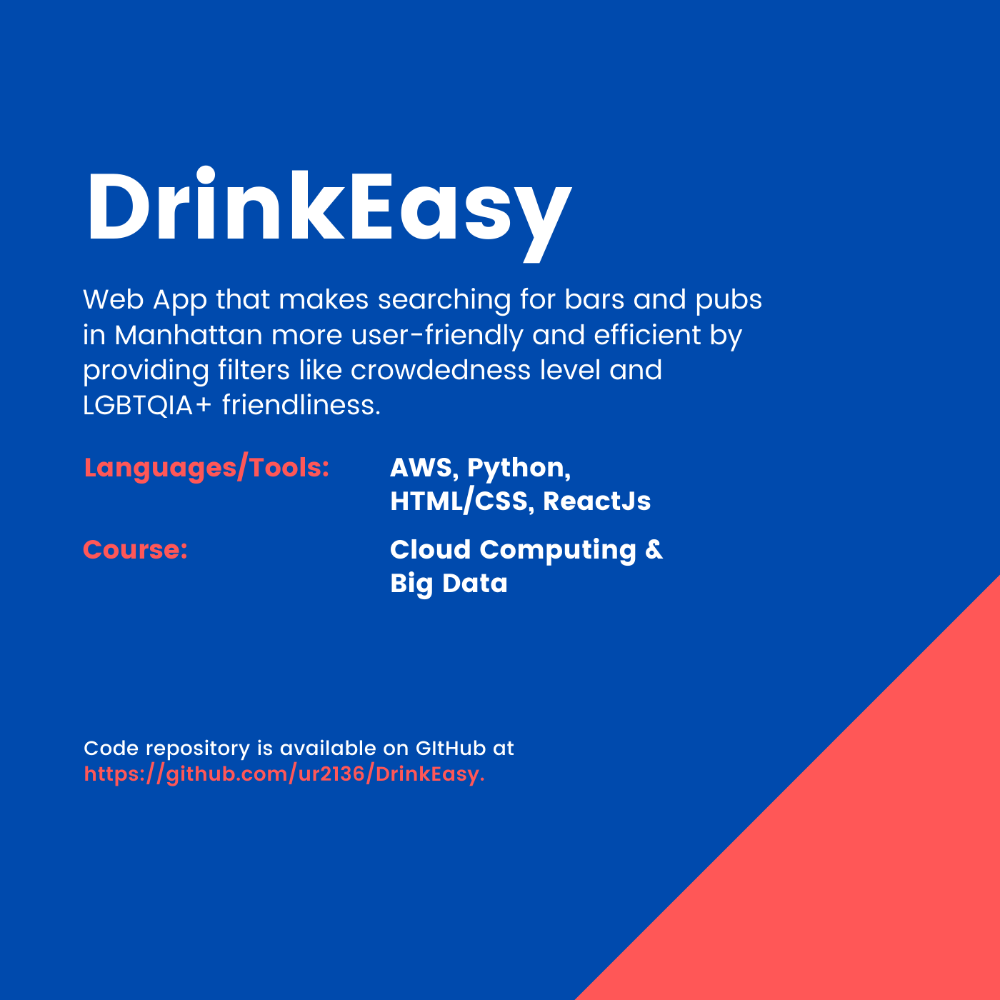

web app
DrinkEasy is a serverless, event-driven, scalable web application designed to make socializing easier for NYC. The application collects data about bars/clubs near the user or a location of the user’s choice and makes smart suggestions based on relevant filtering criteria such as the level of crowdedness, operating times, user reviews, ratings and lgbtq friendliness. The aim here is to empower the users to make efficient and faster decisions about the places that they want to visit based on the most important parameters. The following diagram describes the architecture of the application:
The following screenshots have been taken from the live application that was hosted on an AWS S3 bucket:
The application supports the following features:
The frontend was designed using ReactJS. The backend was written using AWS Lambda Functions (in Python) and AWS DynamoDB was used for database storage and management. Various external APIs such as Google Places, Google Maps, Google Images and Best Times have been used in the application.
The project was undertaken as a part of the course 'Cloud Computing & Big Data' offered at Columbia University. The project was done in a team of 4 members comprising of Umang Raj, Katie Kim, Chandan Suri and Viswajit Vinod Nair.
The GitHub repository of the project is DrinkEasy.